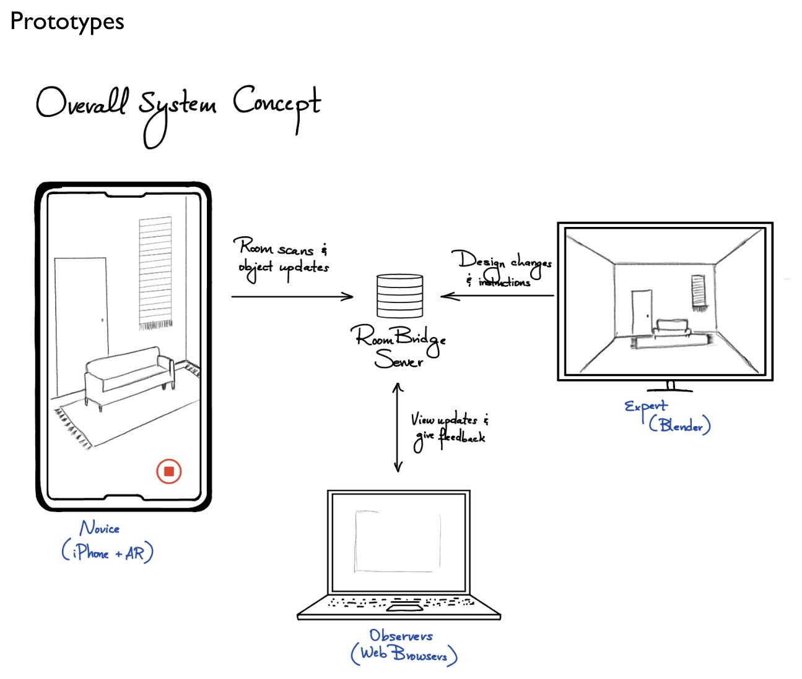
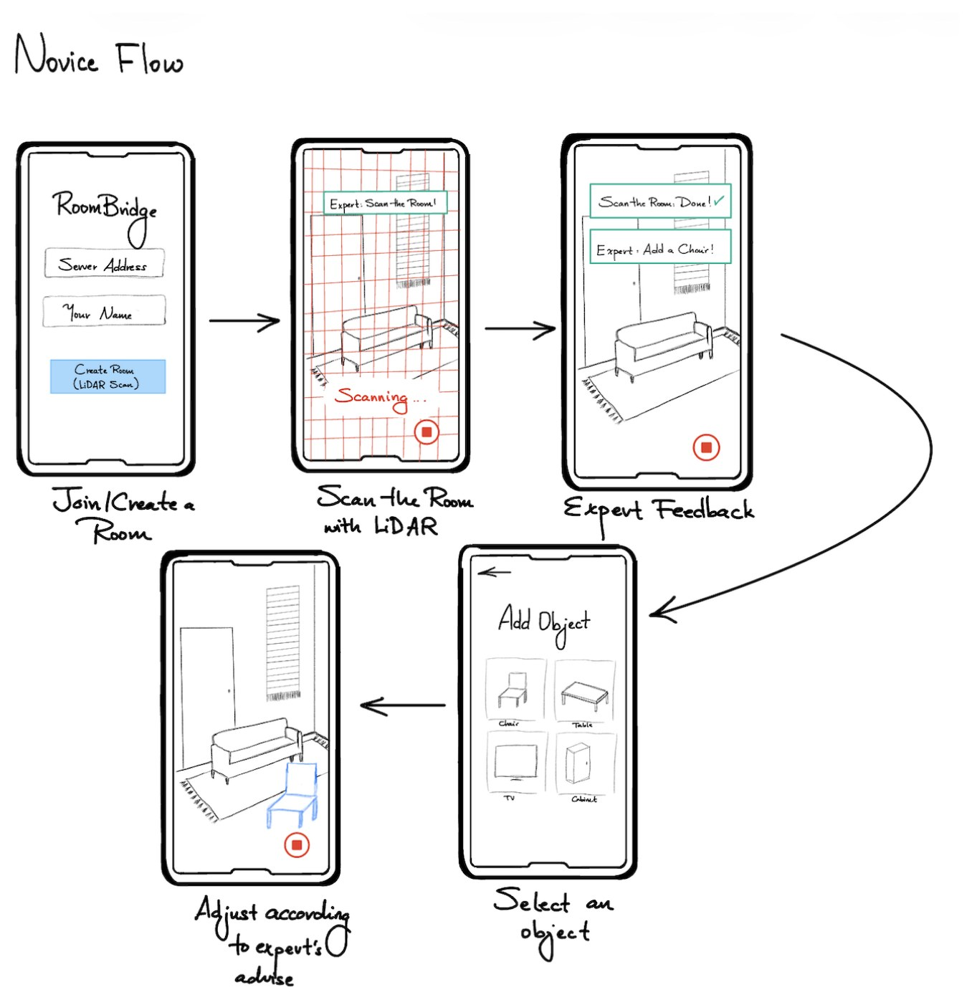
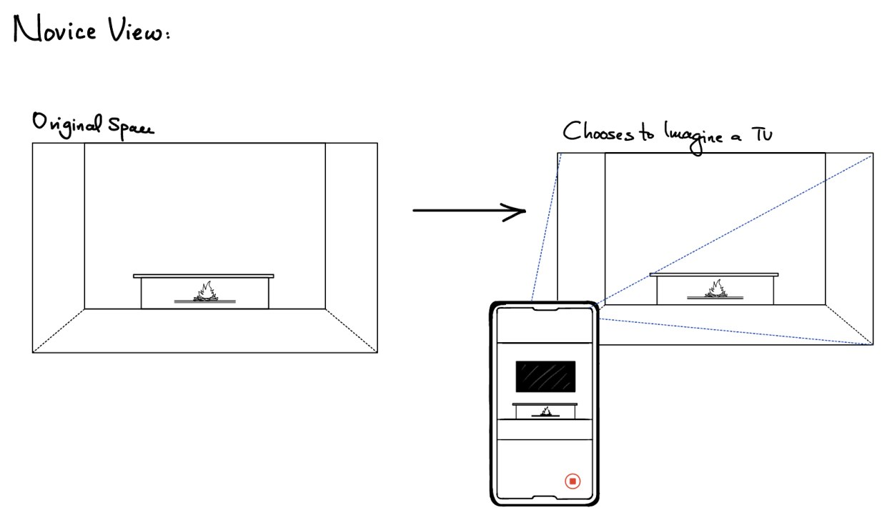
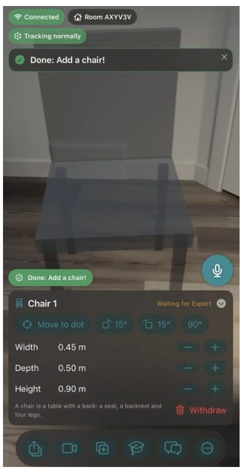

- Type
- Collaborative AR system
- My role
- Design, sketching and prototyping
- Year
- 2026
- Built with
- iPhone LiDAR, ARKit, Blender
Two people, one problem from opposite ends
An expert who knows Blender wants to teach someone remotely, but describing how to move, scale and align a 3D object over a call is close to impossible. The vocabulary doesn't survive the trip.
Meanwhile a novice wants to picture a cabinet above their counter or a television over their fireplace. They have the idea. What they can't do is connect a model on a screen to the room they're standing in, which is the part that actually decides whether the idea is any good.
Both problems have the same shape: the gap between a CAD file and a physical room. That gap is what we designed into.
Where I came in
I worked the design side of this project: the brainstorming, the sketching, and the prototypes. The concepts were reached collectively as a group, and the prototypes were built together with a design partner, which made this a different kind of work from a project I own outright. Less deciding, more making a case clearly enough that the group could agree on it.
Drawing the system before any screen
The first useful sketch wasn't an interface. It was the shape of the system, because three people in three different places needed to look at the same room through three different windows, and nobody could agree on who could see what until it was on paper.

Settling this early paid for itself. Once the three roles were drawn with their arrows, questions like "can an observer move an object?" answered themselves, and the feature list stopped drifting.
The novice's path, panel by panel
The hardest constraint was how little we could assume. The novice has never opened CAD software, so every step had to carry exactly one decision. The flow came out as five: join a room, scan it with LiDAR, receive the expert's instruction, choose an object, then adjust it on the expert's advice.

The sketch that sold it
This one did the most work of anything I drew. The room as it is on the left, the same room with an imagined television on the right, and the phone that bridges them. It made the whole concept legible in a single glance, and it is what we kept returning to whenever a conversation went abstract.

Choosing between three designs
We put three candidates against the same three criteria: remote collaboration, real-time accuracy, and ease of use for someone with no CAD background.
- Snapshot Review. The expert renders images of the proposed design and sends them back. Honest and simple, but every change costs another render-and-wait cycle, and the novice never sees it in their own space.
- Live AR with direct touch. Real-time and immediate, but the novice drags objects around a flat screen. Depth placement is genuinely hard that way, and nothing about it teaches.
- RoomBridge. Live AR, plus guided single-axis movement with haptic feedback when the object reaches its target, plus an approval loop where the novice proposes and the expert accepts, rejects or corrects.
The other two designs get a room designed. Only ours leaves the novice able to do it themselves next time.
That was the argument that settled it. The brief was never really "place a virtual sofa." It was "teach someone CAD in their own living room." Judged against teaching rather than decorating, the approval loop and the guided movement stop looking like extra features and start looking like the point.
From sketch to working build

The thing I find most satisfying here is how little the sketches had to change. The status line, the physical dimensions in metres rather than arbitrary units, and the hold while the expert reviews are all decisions that were made on paper first.
What I took from it
How different shared design work is from design I own alone. On my previous project I made the visual calls myself and could simply decide. Here every idea had to survive a group, and I learned that a drawing is a far better argument than a description. The three-window system diagram and the before-and-after room ended debates that had been going in circles, not because they were persuasive but because they were specific.